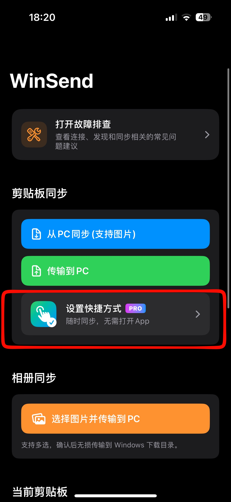
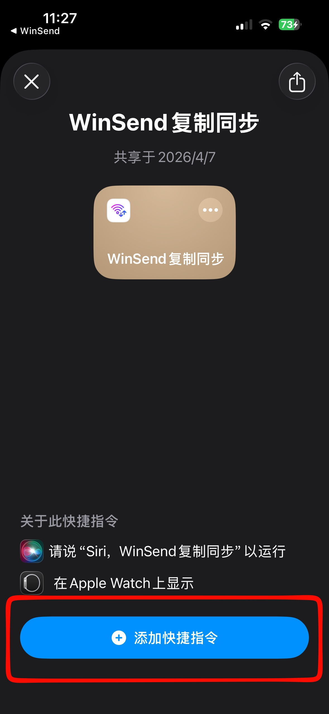
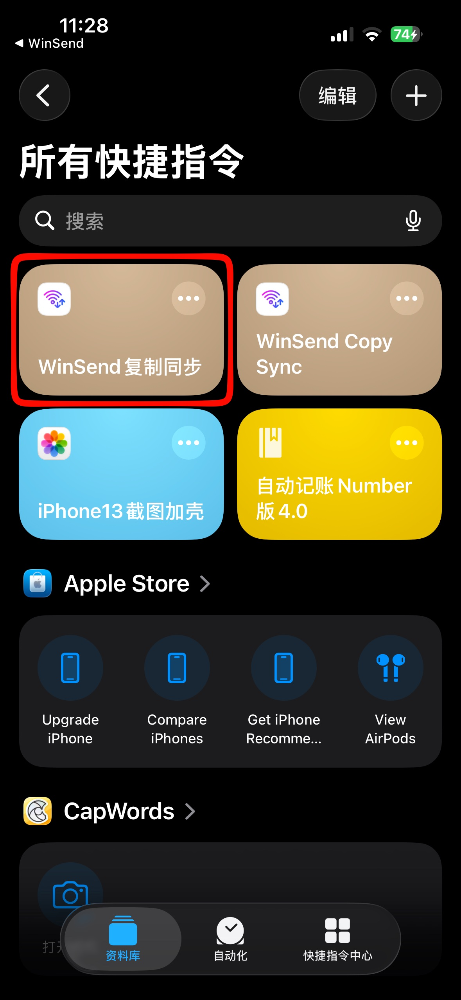
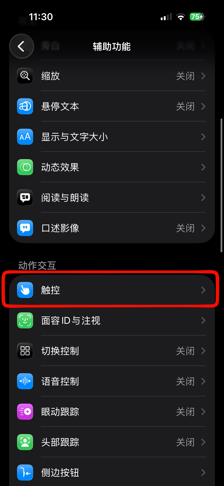
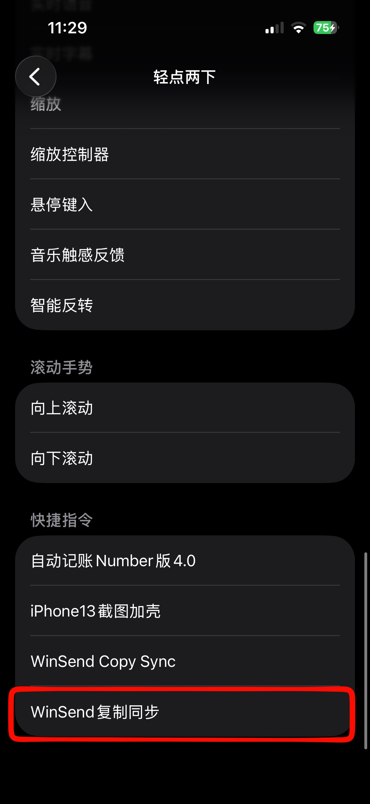

传统的跨设备传输软件，都需要打开App才能完成传输任务，无法做到像AirDrop一样无感的丝滑复制同步。
WinSend实现了无需打开App，就可以和Windows进行剪贴板的复制传输。这是WinSend区别于传统的LocalSend等老牌传输软件最智能化的特色功能之一。
我们做到了只要轻点两下手机背面，就可以在任何App中，实现复制同步。这是目前最接近于AirDrop的跨设备同步 软件。
实际使用效果
下面用一个实际的例子作为展示
详细设置教程
一次安装，随时使用
第一步：安装 WinSend iOS 端和 Windows 客户端
先确保 iPhone 与 Windows 端都已经完成安装，并能在同一网络环境中正常运行。
安装流程可以参考：WinSend 安装与配对设置
第二步：打开 WinSend App，进入设置快捷方式页面


第三步：添加快捷方式
按照 App 内提供的入口完成快捷方式的添加，您可以在快捷方式App中查看成功添加的 WinSend复制同步 快捷方式。


第四步：设置背面双击 / 三击触发
把刚添加好的快捷方式绑定到 iPhone 的"轻点背面"功能。建议优先尝试双击，如果担心误触，也可以改用三击。
- 1 打开 iPhone "设置"
- 2 进入 "辅助功能" → "触控" → "轻点背面"
- 3 选择 "轻点两下" 或 "轻点三下"
- 4 找到并选择 "WinSend复制同步"
- ✓ 完成后，双击手机背面即可触发同步




常见问题（FAQ）
1. iPhone 可以和 Windows 共享剪贴板吗？
默认情况下，不可以。
苹果的 Universal Clipboard 仅支持 iPhone、iPad 和 Mac 之间同步，Windows 电脑无法直接使用。
如果您使用的是 Windows PC，可以通过 WinSend 实现 iPhone 复制内容后，配合隔空投送快捷方式，直接在电脑上粘贴。
2. AirDrop 可以传到 Windows 电脑吗？
不可以。
AirDrop 仅支持苹果设备之间传输，例如 iPhone、iPad 和 Mac。
如果您使用 Windows，可以使用 WinSend 作为替代方案，快速传输文字、链接等内容。
3. 如何把 iPhone 上复制的文字快速发送到电脑？
你可以：
- 在 iPhone 上复制文字/链接
- 触发 WinSend 快捷方式
- 在 Windows 上直接 Ctrl + V 粘贴
不需要微信、QQ、邮件或手动发送给自己。
4. iPhone 和 Windows 传文字一定要用微信吗？
不一定。
很多人习惯：
- 发微信给自己
- 用 QQ 文件助手
- 存到备忘录
- 发邮件
这些方法步骤更多，也更慢。
如果只是快速同步文字或链接，直接共享剪贴板会更方便。
5. 使用 iPhone 和 Windows 同步剪贴板需要 iCloud 吗？
不需要。WinSend 不依赖 iCloud，也不需要 Apple ID。
6. WinSend 和 AirDrop 有什么区别？
AirDrop 更适合苹果生态内部设备。
如果你使用的是：
- iPhone + Windows
- iPhone + PC
WinSend 更适合跨平台场景。
7. WinSend 和微软 Phone Link 有什么区别？
Phone Link 功能较多，但配置流程相对复杂。需要注册登陆Microsoft账号。
WinSend 更专注于：
- 无注册，无登陆。
- 快速发送。
操作更轻量。